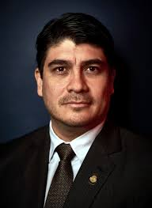

Elecciones Presidenciales
Esta página tiene como objetivo informar a la población sobre los candidatos a la presidencia y sus partidos políticos.
|  |  |
| Bandera | Nombre del candidato | Encuesta #1 -Votos- | Encuesta #2 -Porcentaje de apoyo- |
|---|---|---|---|
 |
Carlos Alvarado | 21.63% | 6% |
 |
Antonio Alvarez DeSanti | 18.63% | 6% |
 |
Rodolfo Piza | 15.99% | 9% |
 |
Edgardo Araya | 0.78% | 6% |